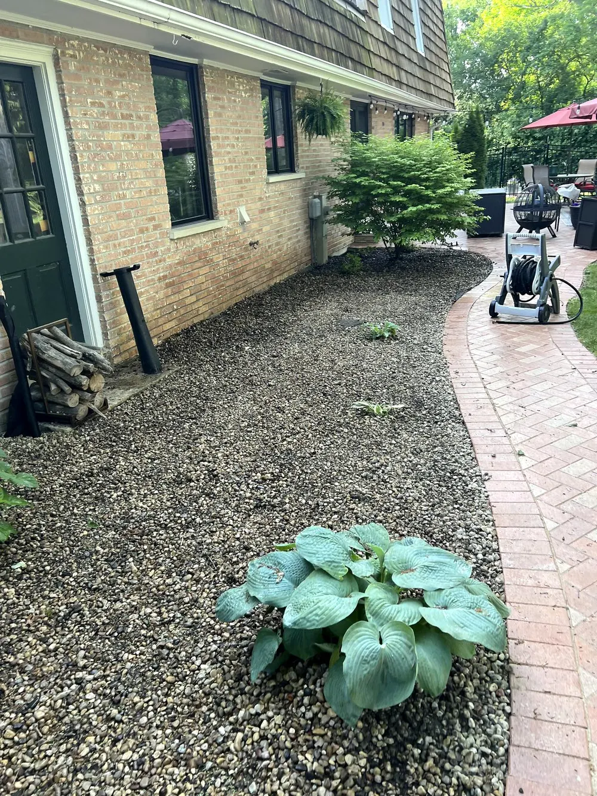
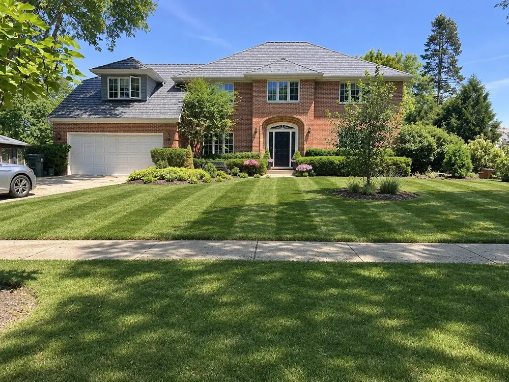
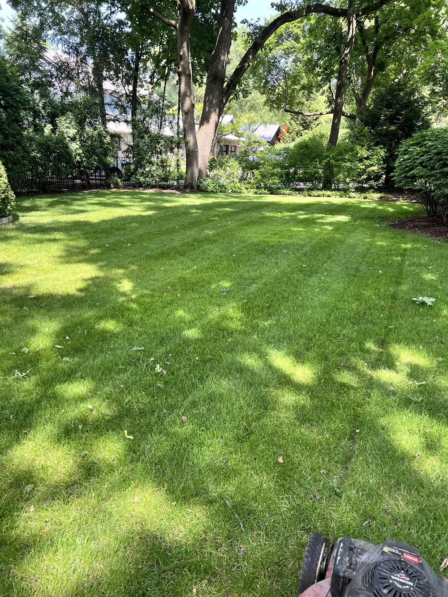

Real projects.
Local care.
A closer look at our lawns, cleanups and landscape projects. Each project stays together, with before and in-progress photos distinguished from finished results. Open any photo to see the full picture.
Leaf cleanup
One property, before and after leaf collection.

Before the cleanup.
The same property with fallen leaves covering the parkway before work began.

A clear parkway.
The lawn and parkway after leaf collection and removal.
Retaining-wall rebuild
From the existing wall through removal and preparation to finished stonework.

The starting point.
The existing wall before the retaining-wall rebuild.

Making way for the rebuild.
Removal work exposes the slope behind the old wall.

Below the finished surface.
The excavated area during preparation for the new wall.

The complete view.
The finished wall in the context of the surrounding property.

Built into the landscape.
A closer view of the completed retaining wall and its finished courses.
Patio garden-bed refresh
Before the work, a finished gravel surface and a planting detail. These are different views of the patio planting area, not a matched before-and-after pair.

Before the bed refresh.
Torn landscape fabric and scattered gravel in the bed before work began.


A finished gravel surface.
The gravel bed and hosta after the refresh, viewed from the other end of the patio.

A closer look at the planting.
The established shrub and planting bed beside the curved brick patio.
Residential lawn care
Striped front lawns and green backyard spaces.


A striped front lawn.
Mowing lines across the front lawn, framed by curved planting beds.


Green space out back.
A backyard lawn surrounded by mature trees and established planting beds.
What does your property need?
Tell us about your project and location. We'll discuss the scope and confirm availability before booking.